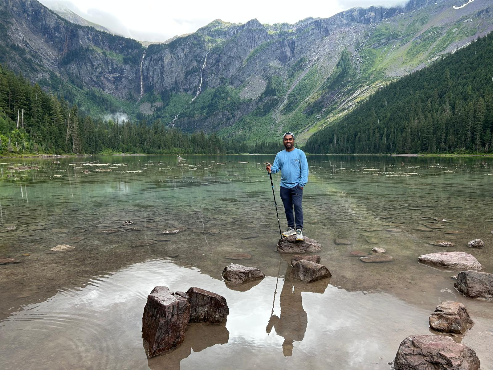

Postdoctoral Fellow
Global Water Security Center · University of Alabama
Environmental economist and applied data scientist. Ph.D. in Applied Economics, University of Saskatchewan (2025). Research spans water and agricultural policy, non-market valuation, and AI engineering, with publications in Nature, Environmental and Resource Economics, and Canadian Water Resources Journal.
I am a Postdoctoral Fellow at the Global Water Security Center, University of Alabama, building quantitative models for water-security and agricultural program evaluation. My work delivers outputs to federal agency program officers and informs national-scale policy decisions.
My doctoral research at the University of Saskatchewan produced three peer-reviewed studies on the economic value of water quality and agricultural water use, combining discrete choice experiments, hedonic pricing, citizen-science data, and biophysical crop simulation.
In parallel, I build AI engineering tools in Python: RAG pipelines, multi-agent orchestration systems, and a fine-tuned Qwen2.5-3B language model adapter, using FastAPI, Pinecone, and the Claude API.
Meta-analysed 29 hedonic pricing studies (623 observations) via meta-regression and geospatial benefit transfer to estimate the national economic value of water-quality improvements across Canada. Produced a province-level estimate for government cost-benefit analysis.
Coupled AquaCrop-OS biophysical crop simulation with stochastic economic analysis across 397 Saskatchewan fields to estimate irrigation water shadow prices where market prices do not exist. Informs provincial water allocation policy under climate change.
Built a Travel Cost Method model on 3.5 million eBird citizen-science records to estimate individualized recreational demand for freshwater ecosystems. Applied random-parameters discrete choice modelling to recover respondent-level WTP distributions.
Designed a four-version split-sample discrete choice experiment (n=3,850) with GIS-assigned status-quo conditions to isolate the causal effect of spatial context on water quality valuations. Combined stated and revealed preference data in mixed logit and RPL models.
Estimated landowner willingness-to-accept compensation for USDA grassland conservation enrollment using contingent valuation and probit modelling. Integrated U.S. Census covariates and USGS spatial data via ArcGIS; benchmarked total program cost against federal allocations.
Developed multi-agent orchestration systems, retrieval-augmented generation pipelines, and a fine-tuned Qwen2.5-3B LoRA adapter (val loss 0.649). Also built a drought-detection time-series classification pipeline on multi-source satellite and climate data using Databricks.
Valuing local water quality in Ontario using revealed preference data